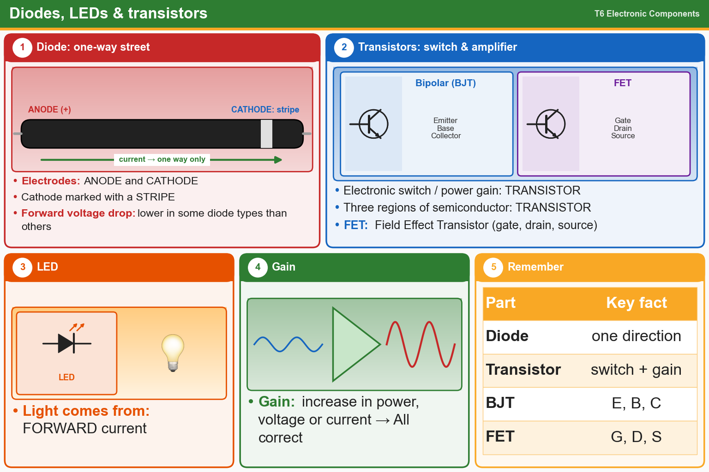

💡 Diode = one-way current (stripe = cathode). Transistor = switch or amplifier. FET = gate, drain, source.
📚 Key words
- Diode
- Lets current flow only one way. Leads: anode and cathode (the cathode is marked with a stripe).
- Forward voltage drop
- Voltage a diode uses up when conducting. It differs between diode types.
- LED
- Light-Emitting Diode. Glows when forward current flows.
- Semiconductor
- A material (like silicon) used to make diodes and transistors.
- Transistor
- A part with three semiconductor regions. It works as a switch or an amplifier.
- Gain
- How much bigger the output is than the input (voltage, current or power).
- FET
- Field Effect Transistor. Leads: gate, drain, source.
- Bipolar transistor
- Leads: emitter, base, collector.
Press Check on any question to see if you're right (it won't show the answer), or Grade at the bottom to grade the whole page.
T6B02
What electronic component allows current to flow in only one direction?
✘A.Fuse
✘B.Resistor
✘C.Driven element
✔D.Diode
T6B09
What are the names for the electrodes of a diode?
✘A.Plus and minus
✔B.Anode and cathode
✘C.Source and drain
✘D.Gate and base
T6B06
How is the cathode lead of a semiconductor diode often marked on the package?
✔A.With a stripe
✘B.With the letter C
✘C.With the letter K
✘D.With the word "cathode"
T6B01
Which is true about forward voltage drop in a diode?
✘A.It is proportional to peak inverse voltage
✔B.It is lower in some diode types than in others
✘C.It indicates that the diode is defective
✘D.It has no impact on the voltage delivered to the load
T6B07
What causes a light-emitting diode (LED) to emit light?
✘A.Reverse current
✘B.Capacitively-coupled RF signal
✔C.Forward current
✘D.Inductively-coupled RF signal
T6B03
Which of these components can be used as an electronic switch?
✘A.Potentiometer
✔B.Transistor
✘C.Varistor
✘D.Thermistor
T6B04
Which of the following components can consist of three regions of semiconductor material?
✘A.Alternator
✘B.Triode
✘C.Pentode
✔D.Transistor
T6B10
Which of the following can provide power gain?
✔A.Transistor
✘B.Transformer
✘C.Reactor
✘D.Resistor
T6B05
What type of transistor has a gate, drain, and source?
✘A.Bipolar junction
✘B.Hall-effect
✘C.Varistor
✔D.Field-effect
T6B08
What does the abbreviation FET stand for?
✘A.Free Electron Transmitter
✔B.Field Effect Transistor
✘C.Frequency Emission Transmitter
✘D.Fast Electron Transistor
T6B12
What are the names of the electrodes of a bipolar junction transistor?
✔A.Emitter, base, collector
✘B.Signal, bias, power
✘C.Pole one, pole two, output
✘D.Input, output, supply
T6B11
What does the term gain mean in amplifiers?
✘A.The output signal current relative to the input signal current
✘B.The output signal voltage relative to the input signal voltage
✘C.The output signal power relative to the input signal power
✔D.All these choices are correct